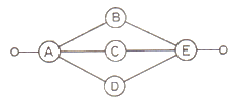
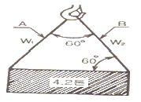
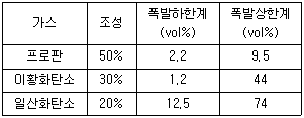

산업안전산업기사 (2008-03-02 기출문제)
1과목: 산업안전관리론
1. 수퍼(Super)의 역할이론 중 역할연기에 대한 설명으로 옳은 것은?
- 인간을 사물에 적응시키는 능력이다.
- 자아탐색인 동시에 자아실현의 수단이다.
- 개인의 역할을 기대하고 감수하는 수단이다.
- 다른 역할을 해내기 위해 다른 일을 구할 때도 있다.
(정답률: 52%)

2. 사고예방대책 제5단계의 “시정책의 적용”에서 3E와 관계가 없는 것은?
- 교육(Education)
- 기술(Enginerring)
- 재정(Economics)
- 관리(Enforcement)
(정답률: 84%)
3. 다음 중 헤드십에 관한 내용으로 볼수 없는 것은?
- 권한의 부여는 조직으로부터 위임받는다.
- 권한에 대한 근거는 법적 또는 규정에 의한다.
- 부하와의 사회적 간격이 좁다.
- 지휘의 형태는 권위주의적이다.
(정답률: 79%)
4. 다음 중 안전모의 성능시험 항목이 아닌 것은?
- 내관통성
- 충격흡수성
- 내구성
- 난연성
(정답률: 62%)
5. 다음 중 유기가스중 방독마스크의 정화통 색은?
- 녹색
- 갈색
- 적색
- 백색
(정답률: 64%)
6. 다음 중 100~1000명 미만의 중규모 사업장에 가장 적합한 안전조직은?
- 참모식 조직
- 라인식 조직
- 위원회 조직
- 라인 및 참모 혼합식 조직
(정답률: 66%)
7. 다음 중 감각차단현상이 발생하기 가장 쉬운 경우는?
- 복잡한 업무가 장시간 지속될 때
- 정신적인 업무가 장시간 지속될 때
- 단조로운 업무가 장시간 지속될 때
- 주의력의 배분을 요하는 작업을 장시간 지속할 때
(정답률: 64%)
8. 산업안전보건법에 규정된 안전ㆍ보건표지에 관한 설명으로 옳은 것은?
- 안내표지는 청색의 원형 바탕에 백색으로 표시되어 있으며 9종류가 있다.
- “인화성물질의 경고” 표지는 검정색 삼각형 모양의 노랑의 바탕색을 사용한다.
- 안전ㆍ보건표지에 사용되는 흰색은 파란색 또는 녹색에 대한 보조색이다.
- 안전ㆍ보건표지에 사용되는 기본모형의 색채 중 빨강은 경고표지에 사용할 수 없다.
(정답률: 58%)
9. 다음의 재해원인 중 간접원인으로 볼수 없는 것은?
- 안전교육 미시행
- 생산방법의 부적당
- 구조 재료의 부적합
- 보호구의 미사용
(정답률: 72%)
10. 연평균 1000명의 근로자가 작업하는 사업장에서 1일 8시간동안 연간 300일을 근무하는 동안 24건의 재해가 발생하였다. 만약, 이 사업장에서 한 작업자가 평생동안 근무한다면 약 몇건의 재해를 당하겠는가? (단, 1인당 평균근로시간은 1000000시간으로 한다.)
- 1건
- 3건
- 7건
- 10건
(정답률: 28%)
11. 안전행동을 실행해 낼 수 있는 동기를 부여하는데 가장 적절한 교육은?
- 안전지식교육
- 안전기능교육
- 안전태도교육
- 안전환경교육
(정답률: 74%)
12. 다음 중 재해예방의 4원칙에 해당하지 않는 것은?
- 예방가능의 원칙
- 대책선정의 원칙
- 손실우연의 원칙
- 통계확률의 원칙
(정답률: 86%)
13. 다음 중 하인리히 재해 발생 5단계 중 제3단계에 해당하는 것은?
- 불안전한 행동 또는 불안전한 상태
- 사회적 환경 및 유전적 요소
- 관리의 부재
- 사고
(정답률: 77%)
14. 다음 중 위험예지훈련 기초 4라운드(4R)에 대한 내용으로 틀린 것은?
- 1라운드: 본질추구
- 2라운드: 위험요인결정
- 3라운드: 대책수립
- 4라운드: 목표설정
(정답률: 68%)
15. 연간 근로시간이 240000시간인 A공장에서 지난 해 5건의 재해가 발생하여 총 330일의 휴업일수가 발생하였다면 이 공장의 강도율은 약 얼마인가?
- 1.03
- 1.13
- 1.23
- 1.33
(정답률: 52%)
16. 안전교육방법 중 사례연구법의 장점으로 볼 수 없는 것은?
- 흥미가 있고, 학습동기를 유발할 수 있다.
- 현실적인 문제의 학습이 가능하다.
- 관찰력과 분석력을 높일 수 있다.
- 원칙과 규정의 체계적 습득이 용이하다.
(정답률: 71%)
17. 다음 중 학습의 전개 단계에서 주제를 논리적으로 체계화 하는 방법과 거리가 가장 먼 것은?
- 간단한 것에서 복잡한 것으로
- 부분적인 것에서 전체적인 것으로
- 미리 알려져 있는 것에서 미지의 것으로
- 많이 사용하는 것에서 적게 사용하는 것으로
(정답률: 65%)
18. 안전관리자가 안전교육의 효과를 높이기 위해서 안전퀴즈대회를 열어 우승자에게 상을 주었다면 이는 어떤 학습원리를 학습자에게 적용한 것인가?
- Thorndike의 연습의 법칙
- Thorndike의 준비성의 법칙
- Pavloc의 강도의 원리
- Skinner의 강화의 원리
(정답률: 47%)
19. 다음의 적응기제 중 자기의 난처한 입장이나 실패의 결점을 이유나 변명으로 일관하는 것, 또는 실제의 행위나 상태보다 훌륭하게 평가되기 위하여 구실을 내세우는 행위를 무엇이라 하는가?
- 투사
- 도피
- 합리화
- 동일화
(정답률: 78%)
20. 다음의 피로의 요인 중 외부인자에 속하지 않는 것은?
- 작업 조건
- 환경 조건
- 생활 조건
- 경험 조건
(정답률: 63%)
2과목: 인간공학 및 시스템안전공학
21. 암호체계 사용상의 일반적 지침 중 부호의 양립성(compatibility)에 대한 설명은?
- 자극은 주어진 상황하의 감지장치나 사람이 감지할 수 있는 것이어야 한다.
- 암호의 표시는 다른 암호 표시와 구별될 수 있어야 한다.
- 자극과 반응 간의 관계가 인간의 기대와 모순되지 않아야 한다.
- 두 가지 이상을 조합하여 사용하면 정보의 전달이 촉진된다.
(정답률: 48%)
22. 다음의 시스템 안전해석에 대한 설명으로 옳은 것은?
- 해석의 수리적 방법에 따라 귀납적, 연역적 방법이 있다.
- 해석의 논리적 견지에 따라 정성적, 연역적 방법이 있다.
- FTA는 연역적, 정량적 분석이 가능한 방법이다.
- FMEA를 인간과오율 추정법이라 한다.
(정답률: 52%)
23. 다음 시스템의 신뢰도는 약 얼마인가? (단, A 와 B 의 신뢰도는 0.9이고, C, D, E의 신뢰도는 모두 0.8이다)

- 0.48
- 0.60
- 0.72
- 0.84
(정답률: 62%)
24. 인간공학의 중요한 연구과제인 계면(interface)설계에 있어서 다음 중 계면에 해당되지 않는 것은?
- 작업공간
- 표시장치
- 조종장치
- 조명장치
(정답률: 64%)
25. 어떤기기의 고장율이 시간당 0.002로 일정하다고 한다. 이 기기를 100시간 사용했을 때 고장이 발생할 확률은?
- 0.1813
- 0.2214
- 0.6253
- 0.8187
(정답률: 31%)
26. 다음 중 통제표시비의 설계시 고려하여야 할 사항으로 볼 수 없는 것은?
- 계기의 크기
- 작업자의 시력
- 조작시간
- 방향성
(정답률: 75%)
27. 다음 중 체계가 감지, 정보보관, 정보처리 및 의식결정, 행동을 포함한 모든 임무를 수행하는 체계를 무엇이라 하는가?
- 수동 체계
- 기계화 체계
- 자동 체계
- 반자동 체계
(정답률: 63%)
28. 평균고장시간(MTTF)이 4×108 시간인 요소 2개가 병렬체계를 이루었을 때 이 체계의 수명은 얼마인가?
- 2×108시간
- 4×108시간
- 6×108시간
- 8×108시간
(정답률: 36%)
29. 다음 통제용 조종장치의 형태 중 그 성격이 다른 것은?
- 푸시 버튼(push button)
- 토글 스위치(toggle switch)
- 노브(knob)
- 로터리선택스위치(rotary select switch)
(정답률: 67%)
30. 다음 중 작업방법의 개선원칙(ECRS)에 해당되지 않는 것은?
- 결합(Combine)
- 단순화(Simplify)
- 재배치(Rearrange)
- 교육(Education)
(정답률: 45%)
31. 집단으로부터 얻은 자료를 선택하여 사용할 때에 특정한 설계 문제에 따라 대상 자료를 선택하는 인체 계측 자료의 응용 원칙 3가지와 거리가 먼 것은?
- 사용빈도에 따른 설계
- 조절범위식 설계
- 극단치에 속한 사람을 위한 설계
- 평균치를 기준으로 한 설계
(정답률: 51%)
32. 다음 중 인간의 과오를 평가하기 위한 정량적 해석방법은?
- THERP
- FTA
- CA
- PHA
(정답률: 71%)
33. 윗 팔을 자연스럽게 수직으로 늘어뜨린 채, 아래팔만으로 편하게 뻗어 파악할 수 있는 구역을 무엇이라 하는가?
- 파악 한계역
- 최소 작업역
- 정상 작업역
- 최대 작업역
(정답률: 60%)
34. 다음 중 인간이 기계보다 능가하는 기능이라고 할 수 없는 것은?
- 완전히 새로운 해결책을 찾아내는 기능
- 반복적인 작업을 신뢰성있게 수행하는 기능
- 관찰을 통해서 일반화하여 귀납적으로 추리하는 기능
- 불시에 발생한 부적절한 일에 대하여 능숙하게 진행시키는 기능
(정답률: 72%)
35. 다음 중 수공구의 일반적인 설계 원칙과 거리가 먼 것은?
- 손목은 곧게 유지되도록 설계한다.
- 손가락 동작의 반복을 피하도록 설계한다.
- 손잡이는 손바닥과의 접촉면적이 작게 설계한다.
- 공구의 무게를 줄이고 사용시 균형이 유지되도록 한다.
(정답률: 79%)
36. 다음 중 진동이 인간 성능에 미치는 일반적인 영향과 거리가 먼 것은?
- 진동은 진폭에 비례하여 시력을 손상하며 10~25Hz의 경우가 가장 심하다.
- 진동은 진폭에 비례하여 추적 능력을 손상하며 5Hz 이하의 낮은 진동수에 가장 심하다.
- 안정되고 정확한 근율 조절을 요하는 작업은 진동에 의해서 저하된다.
- 반응시간, 감시, 형태 식별 등 주로 중앙 신경 처리에 달린 임무는 진동의 영향에 민감하다.
(정답률: 39%)
37. 5000개의 베어링을 품질검사하여 400개의 불량품을 처리하였으나 실제로는 1000개의 불량 베어링이 있었다면 이러한 상황의 HEP(Human error pribability)는?
- 0.04
- 0.08
- 0.12
- 0.16
(정답률: 59%)
38. 다음 중 작위적 오류(commission error)에 해당되지 않는 것은?
- 전선(cable)이 바뀌었다.
- 틀린 부품을 사용하였다.
- 부품이 거꾸로 조립되었다.
- 부품을 빠뜨리고 조립하였다.
(정답률: 50%)
39. FTA(Fault Tree Analysis)에 사용되는 논리 중에서 입력사상 중 어느 하나만이라도 발생하게 되면 출력사상이 발생하는 것은?
- AND GATE
- OR GATE
- 기본사상
- 통상사상
(정답률: 63%)
40. 한 사무실에서 타자기의 소리 때문에 말소리가 묻히는 현상을 무엇이라 하는가?
- CAS
- dBA
- masking
- phon
(정답률: 74%)
3과목: 기계위험방지기술
41. 프레스의 일반적인 방호장치가 아닌 것은?
- 광전자식 방호장치
- 포집형 방호장치
- 게이트 가드식 방호장치
- 양수 조작식 장호장치
(정답률: 66%)
42. 재료에 구멍이 있거나 노치(notch) 등이 있을 때, 외력이 작용하면 국부적으로 응력이 커지는 현상은?
- 가공경화
- 피로
- 응력집중
- 크리이프(creep)
(정답률: 67%)
43. 4.2ton의 화물을 그림과 같이 60°의 각을 갖는 와이어로프로 매달아 올릴 때 와이어 로프 A에 걸리는 장력W1은 약 얼마인가?

- 2.10 ton
- 2.42 ton
- 4.20 ton
- 4.82 ton
(정답률: 57%)
44. 다음 중 보일러의 폭발사고 예방을 위한 방호장치가 아닌 것은?
- 긴북이탈방지장치
- 압력방출장치
- 압력제한스위치
- 고저수위조절장치
(정답률: 72%)
45. 다음 중 보일러 발생증기의 이상 현상이 아닌 것은?
- 캐리오버(cary over)
- 프리아밍(priming)
- 포밍(foaming)
- 비등(boiling)
(정답률: 58%)
46. 어떤 로프의 안전하중이 200kgf 이고, 파단하중이 600 kgf 일때 이 로프의 안전율은?
- 0.33
- 3
- 200
- 300
(정답률: 76%)
47. 와이어 로프 구성기호 “6 × 19”의 표기에서 “6”의 의미는?(오류 신고가 접수된 문제입니다. 반드시 정답과 해설을 확인하시기 바랍니다.)
- 소선의 직경(mm)
- 소선수
- 스트랜드수
- 로프의 인장강도
(정답률: 53%)
48. 다음 중 슬로터(slotter)의 방호장치로 적합하지 않는 것은?
- 칩받이
- 방책
- 칸막이
- 인발블록
(정답률: 60%)
49. 연삭숫돌 작업시 당해 기계의 이상 여부를 확인하기 위하여 산업안전기준에 관한 규칙에서 규정한 시운전 시간으로 옳은 것은?
- 작업 시작하기 전 2분 이상
- 작업 시작하기 전 4분 이상
- 연삭 숫돌 교체 후 1분 이상
- 연삭 숫돌 교체 후 3분 이상
(정답률: 76%)
50. 연삭 작업시 안전사하으로 옳지 않은 것은?
- 플랜지의 지름은 반드시 숫돌 지름의 1/5 이상 되는 것을 사용한다.
- 연삭숫돌의 최고사용 원주속도를 초과하지 않는다.
- 숫돌의 결합시에는 축과 0.⑤ ~ 0.15 mm 정도의 틈새를 두어야 한다.
- 연삭 작업은 숫돌의 측면에 서서 한다.
(정답률: 60%)
51. 용접장치의 산업안전기준에 관한 내용으로 옳은 것은?
- 아세틸렌 발생기실 출입구의 문은 목재로 한다.
- 게이지 압력이 메제곱센티미터당 1.3킬로그램을 초과하는 압력의 아세틸렌을 발생시켜 사용한다.
- 아세틸렌 용접장치에는 취관마다 안전기를 설치하여야 한다. (단, 근접한 분기관마다 안전기를 부착했음)
- 아세틸렌 발생기실은 건물의 최상층에 위치하게 하여야 한다.
(정답률: 40%)
52. 선반 작업에 대한 안전수칙으로 틀린 것은?
- 척 렌치는 반드시 척에 끼워 둔다.
- 베드 위에 공구를 올려 놓지 않아야 한다.
- 바이트를 교환 할 때는 기계를 정지시키고 한다.
- 기계 점검을 한 후 작업을 시작한다.
(정답률: 80%)
53. 가스집합장치의 위험방지를 위하여 사업주는 화기를 사용하는 설비로부터 몇 m 이상 떨어진 장소에 가스집합장치를 설치하여야 하는가?
- 20
- 10
- 7
- 5
(정답률: 47%)
54. 다음 중 목재가공용 둥근톱 기계의 방호장치인 반발예방 장치가 아닌 것은?
- 반발방지발톱(finger)
- 분할날(Spreader)
- 반발방지롤(roll)
- 가동식 접촉예방장치
(정답률: 52%)
55. 연삭기에서 숫돌의 회전속도가 너무 빠르면 위험하다. 숫돌의 원주속도를 옳게 표시한 것은?
- 원주속도 = π × 숫돌 반지름 × 숫돌의 매분 회전수
- 원주속도 = 1/2π × 숫돌 반지름 × 숫돌의 매분 회전수
- 원주속도 = π × 숫돌 지름 × 숫돌의 매분 회전수
- 원주속도 = 1/2π × 숫돌의 매분 회전수
(정답률: 57%)
56. 수공구의 재해방지를 위한 일반적인 유의사항이 아닌 것은?
- 사용 전 이상 유무를 점검한다.
- 작업자에게 필요한 보호구를 착용 시킨다.
- 적합한 수공구가 없을 경우 유사한 것을 선택하여 사용한다.
- 사용 전 충분한 사용법을 숙지하고 익힌다.
(정답률: 82%)
57. 작업장에 대한 안전조치 사항 중 틀린 것은?
- 상시통행을 하는 통로에는 75럭스 이상의 채광 또는 조명시설을 하여야 한다.
- 규정된 위험물질을 취급하는 작업장에 설치하여야 하는 비상구는 너비 0.75미터 이상, 높이 1.5미터 이상이어야 한다.
- 높이가 3미터를 초과하는 계단에는 높이 3미터 이내마다 너비 1미터 이상의 계단참을 설치하여야 한다.
- 상시 50인 이상의 근로자가 작업하는 옥내작업장에는 비상시 근로자에게 신속하게 알리기 위한 경보용 설비를 설치하여야 한다.
(정답률: 59%)
58. 기계의 원동기, 회전축 및 체인 등 근로자에게 위험을 미칠 우려가 있는 부위에 설치해야 하는 위험방지 장치로 적합하지 않는 것은?
- 덮개
- 건널다리
- 클러치
- 슬리브
(정답률: 44%)
59. 정(chisel) 작업의 일반적인 안전수칙으로 잘못된 것은?
- 보안경을 착용하여야 한다.
- 절단 작업시 철편이 날아 튀는 것을 조심하여야 한다.
- 작업을 시작할 때는 가급적 정을 세게 타격하고 점차 힘을 줄여간다.
- 절단이 끝날 무렵에는 정을 세게 타격 해서는 안된다.
(정답률: 80%)
60. 크레인 작업시 로프에 1 ton의 중량을 걸어, 20m/s2의 가속도로 감아 올릴 때 로프에 걸리는 총하중(kgf)은 약 얼마인가?
- 1040.34
- 2040.53
- 3040.82
- 3540.91
(정답률: 48%)
4과목: 전기 및 화학설비위험방지기술
61. 다음 중 산업안전보건법상 폭발성 물질에 해당하는 것은?
- 유기과산화물
- 칼슘
- 황
- 알킬알루미늄
(정답률: 47%)
62. 다음 중 분말소화약제에 대한 설명으로 틀린 것은?
- B급, C급 화재의 소화에 적당하다.
- 방사원으로는 질소가스를 사용한다.
- 주된 소화효과는 희석효과이다.
- 축압식과 가스가압식이 있다.
(정답률: 65%)
63. 혼합가스의 조성이 다음 표와 같을 때 공기 중 폭발하한계는 약 몇 vol%인가?

- 1.20
- 2.03
- 3.67
- 5.30
(정답률: 55%)
64. 다음 중 폭발의 최소발화에너지에 대한 설명으로 틀린 것은?
- 불활성기체의 첨가는 최소발화에너지를 크게한다.
- 최소발화에너지는 화학양론농도보다 조금 높은 농도일때 최소값이 된다.
- 혼합기체의 농도가 능가함에 따라 최소발화에너지는 상승한다.
- 혼합기체의 온도가 상승하면 최소발화에너지도 상승한다.
(정답률: 33%)
65. 다음 중 분진폭발에 대한 설명으로 틀린 것은?
- 일반적으로 입자의 크기가 클수록 위험이 더 크다.
- 산소의 농도가 증가될 경우 폭발위험은 증가된다.
- 주위 공기의 난류확산은 위험을 증가시킨다.
- 가스폭발에 비하여 불완전 연소를 일으키기 쉽다.
(정답률: 57%)
66. 다음 배관설비 중 역류를 방지하기 위하여 설치하는 밸브는?
- 그로브밸브
- 체크밸브
- 게이트밸브
- 시퀀스밸브
(정답률: 70%)
67. 저항 값이 0.1Ω인 도체에 10A의 전류가 1분간 흘렀을 경우 발생하는 열량은 몇 cal인가?
- 124
- 144
- 166
- 250
(정답률: 68%)
68. 인체의 피부를 절연파괴시키는 임계전압은 일반적인 경우 몇 V 이상으로 보는가?
- 100
- 380
- 440
- 1000
(정답률: 29%)
69. 다음 중 자연발화에 대한 설명으로 가장 적절한 것은?
- 점화원을 잘 관리하면 자연발화를 방지할 수 있다.
- 자연발화는 외부로 방열하는 열보다 내부에서 발생하는 열의 양이 많은 경우에 발생한다.
- 습도는 높게 하면 자연발화를 방지할 수 있다.
- 윤활유를 닦은 걸레의 보관 용기로는 금속재보다는 플라스틱 제품이 더 좋다.
(정답률: 58%)
70. 다음 위험물의 저장 및 취급방법이 잘못된 것은?
- 나트륨, 칼륨은 석유속에 저장한다.
- 황린은 통풍이 잘되는 서늘한 외부에 보관한다.
- 마그네슘은 물과의 접촉을 피한다.
- 질산암모늄은 가열, 충격, 마찰을 피한다.
(정답률: 70%)
71. 위험물ㆍ폭발물 등의 저장장소에 설치하는 피뢰침의 보호각은 얼마 이하로 하는가?(오류 신고가 접수된 문제입니다. 반드시 정답과 해설을 확인하시기 바랍니다.)
- 60도
- 45도
- 30도
- 20도
(정답률: 43%)
72. 다음 중 정전기의 발생에 영향을 주는 요인 아닌 것은?
- 접촉면적 및 압력
- 분리속도
- 물체의 표면상태
- 외부공기의 풍속
(정답률: 68%)
73. 접지공사시 접지공사의 종류와 접지선의 굵기가 서로 잘못 연결된 것은?(관련 규정 개정전 문제로 여기서는 기존 정답인 4번을 누르면 정답 처리 됩니다. 자세한 내용은 해설을 참고하세요.)
- 제1종 - 지름 2.6mm 이상의 연동선
- 제2종 - 지름 4mm 이상의 연동선
- 제3종 - 지름 1.6mm 이상의 연동선
- 특별 제3종 - 지름 2.6mm 이상의 연동선
(정답률: 58%)
74. 다음 중 방폭구조의 종류와 기호가 잘못 연결된 것은?
- 유입방폭구조 – o
- 압력방폭구조 - p
- 내압방폭구조 – d
- 본질안전방폭구조 - e
(정답률: 65%)
75. 다음 통전 경로 중 위험도가 가장 작은 것은?
- 왼손 – 가슴
- 오른손 - 가슴
- 왼손 – 오른손
- 왼손 - 한발 또는 양발
(정답률: 48%)
76. 다음 중 산업안전보건법상 교류 전압의 분류가 잘못된 것은?
- 저압 - 600볼트 이하의 교류전압
- 고압 - 600볼트 초과 7천볼트 이하의 교류전압
- 특별고압 - 7천볼트를 초과하는 교류전압
- 초고압 - 1만볼트를 초과하는 교류전압
(정답률: 59%)
77. 다음 중 정전기 방전현상에 해당되지 않는 것은?
- 연면방전
- 불꽃방전
- 뇌상방전
- 마찰방전
(정답률: 23%)
78. 다음 중 전기화재의 발생 원인으로 볼 수 없는 것은?
- 누전
- 접지
- 단락
- 정전기
(정답률: 62%)
79. 폭발범위가 1.8~8.5vol% 인 가스의 위험도는 얼마인가?
- 0.8
- 3.7
- 5.7
- 6.7
(정답률: 56%)
80. 다음 중 폭발한계가 가장 넓은 가스는?
- 수소
- 메탄
- 프로판
- 아세틸렌
(정답률: 65%)
5과목: 건설안전기술
81. 건물 외부에 설치하는 안전방망의 수평면과의 설치 각도로 옳은 것은?
- 20 ̊ ~ 30 ̊
- 40 ̊ ~ 50 ̊
- 60 ̊ ~ 70 ̊
- 80 ̊ 이상
(정답률: 59%)
82. 암반 굴착공사에서 굴착높이가 5m, 굴착기초면의 폭이 5m인 경우 양단면 굴착을 할 때 상부단면의 폭은? (단, 굴착기울기는 1 : 0.5로 한다.)
- 5m
- 10m
- 15m
- 20m
(정답률: 48%)
83. 고소작업을 할 때 재료나 공구 등의 낙하로 인한 피해를 방지하기 위해 설치하는 설비에 해당하지 않는 것은?
- 낙하물 방지망
- 수직보호망
- 안전난간
- 방호선반
(정답률: 53%)
84. 크레인의 조립 또는 해체작업시 취해야 할 조치로서 적당하지 않는 것은?
- 작업순서를 정하고 그 순서에 의해 작업을 한다.
- 악천후시에는 작업을 중지시킨다.
- 충분한 공간을 확보하고 장애물이 없도록 한다.
- 작업구역에는 자격증을 보유한 자만 출입시킨다.
(정답률: 76%)
85. 현장에서 강관을 사용하여 비계를 구성하는 때에 비계기둥간의 적재하중을 얼마를 초과해서는 안되는가?
- 200kg
- 300kg
- 400kg
- 500kg
(정답률: 60%)
86. 부득이한 경우를 제외한 일반적인 경우에 공사용 가설도로의 최고 허용 경사도는 얼마인가?
- 5%
- 10%
- 20%
- 30%
(정답률: 47%)
87. 유해ㆍ위험 방지계획서의 제출시 첨부서류의 항목이 아닌 것은?
- 공사개요
- 안전보건관리계획
- 작업환경 조성계획
- 보호장비 폐기계획
(정답률: 68%)
88. 안전대의 등급을 5개로 분류할 때 작업장 작업발판을 설치하기 곤란할 때 착용하는 1개걸이 전용 안전대의 등급은?
- 1종
- 2종
- 3종
- 4종
(정답률: 35%)
89. 화물을 차량계 하역운반 기계ㆍ기구에 싣고 내리는 작업시 작업 지휘자를 지정하여야 하는 것은 단위화물 중량이 얼마 이상일 때를 기준으로 하는가?
- 100kg
- 200kg
- 300kg
- 400kg
(정답률: 44%)
90. 기초의 안전상 부등침하를 방지하는 대책이 아닌 것은?
- 구조물의 전체 하중이 기초에 균등하게 분포되록 한다.
- 기초 상호간을 지중보로 연결한다.
- 한 구조물의 기초는 2종류 이상의 복합적인 기초형식으로 한다.
- 기초 지반 아래의 토질이 연약할 경우는 연약지반 처리공법으로 보강한다.
(정답률: 63%)
91. 가설통로의 구조로서 적당하지 않는 것은?
- 일반적으로 경사는 30도 이하로 할 것
- 높이가 2m 미만인 경우 튼튼한 손잡이를 설치할 때 경사는 30도를 초과할 수 있다.
- 경사가 15도를 초과하는 때에는 미끄러지지 아니하는 구조로 할 것
- 높이 10m 이상인 비계다리에는 8m 이내마다 계단참을 설치할 것
(정답률: 51%)
92. 콘크리트 타설시 안전에 유의해야 할 사항으로 적절하지 않는 것은?
- 타설 속도는 계획에 의하여 실시한다.
- 타설 속도는 하계 1.0m/h, 동계 1.5m/h를 표준으로 한다.
- 콘크리트를 치는 도중에는 거푸집, 동바리 등의 이상 유무를 확인하여야 한다.
- 타설시 공동이 발생되지 않도록 밀실하게 부어 넣는다.
(정답률: 53%)
93. 지반의 굴착작업에 있어 지반의 붕괴 또는 매설물 등의 손괴 등에 의하여 근로자에게 위험이 미칠 우려가 있을 때 미리 작업장소 및 주변에 대하여 조사하여 굴착시기와 작업순서를 정하여야 한다. 이 때의 조사사항과 거리가 먼 것은?
- 형상, 지질 및 지층의 상태
- 균열, 함수, 용수의 유무 및 동결의 유무 또는 상태
- 매설물 등의 유무 또는 상태
- 흙막이 지보공 상태
(정답률: 41%)
94. 크레인을 사용하여 양중작업을 하는 때에 안전한 작업을 위해 준수하여야 할 내용으로 틀린 것은?
- 인양할 하물을 바닥에서 끌어당기거나 밀어 정위치 작업을 할 것
- 가스통 등 운반 도중에 떨어져 폭발 가능성이 있는 위험물용기는 보관함에 담아 매달아 운반할 것
- 인양 중인 하물이 작업자의 머리 위로 통과하게 하지 아니할 것
- 인양할 하물이 보이지 아니하는 경우에는 어떠한 동작도 하지 아니할 것
(정답률: 73%)
95. 사질토 지반 굴착시 모래의 보일링 현상에 의한 흙막이공의 붕괴를 예방하기 위한 대책으로 틀린 것은?
- 흙막이벽의 근입장 증가
- 주변의 지하수위 저하
- 투수거리를 길게 하기 위한 지수벽 설치
- 굴착 주변의 상재 하중 증가
(정답률: 54%)
96. 2m 이상의 비계(달비계, 달대비계 및 말비계 제외)에서 작업할 때 작업발판의 구조에 대한 기준으로 옳은 것은?
- 작업발판의 폭(외줄비계 제외) : 30cm 이상, 발판 재료간의 틈 : 3cm 이하
- 작업발판의 폭(외줄비계 제외) : 40cm 이상, 발판 재료간의 틈 : 3cm 이하
- 작업발판의 폭(외줄비계 제외) : 30cm 이상, 발판 재료간의 틈 : 5cm 이하
- 작업발판의 폭(외줄비계 제외) : 40cm 이상, 발판 재료간의 틈 : 5cm 이하
(정답률: 59%)
97. 건설공사에서 발코니 단부, 엘리베이터 입구, 재료 반입구등과 같이 벽면 혹은 바닥에 추락의 위험이 우려되는 장소를 가르키는 용어는?
- 비계
- 개구부
- 가설구조물
- 연결통로
(정답률: 64%)
98. 거푸집 동바리 설치 기준을 잘못 설명한 것은?
- 파이프서포트는 3본 이상 이어서 사용하지 않는다.
- 강관을 지주로 사용할 때에 수평연결재를 2m 이내마다 2개 방향으로 설치한다.
- 조립강주를 지주로 사용할 때는 높이 5m 이내마다 수평연결재를 2방향으로 설치한다.
- 강관틀을 지주로 사용할 때는 강관틀과 강관틀의 사이에 교차가새를 설치한다.
(정답률: 45%)
99. 교류아크 용접기에 부착해야 할 방호장치는?
- 권과방지장치
- 과부하방지장치
- 자동전격방지장치
- 양수조작식방호장치
(정답률: 67%)
100. 기준에 적합한 작업발판의 설치가 필요한 비계의 최소 높이는?
- 1m
- 2m
- 3m
- 4m
(정답률: 63%)